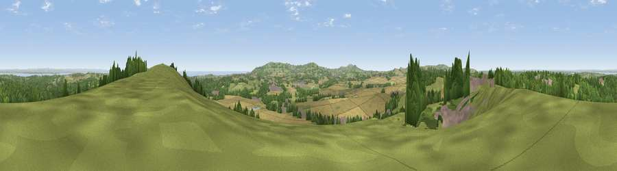

Viewpoint near Arreton
#3060 in England · top 26% of its area beats it · near ArretonWhere it is
The exact computed spot (SZ 53975 87288). Click the marker for map links.
The view, rendered

A 360° render of this exact spot computed from the terrain model, tree cover and land cover — summer colours, afternoon light, calibrated against photographs of famous viewpoints. Real trees, hedges and buildings will differ in detail.
The panorama
Grey silhouette: terrain skyline in each direction (720 bearings, Earth curvature and refraction included). Dashed green: skyline with trees (+15 m) and buildings (+8 m) as obstacles. Blue strip: how far the ground is visible on each bearing.
Where the view opens
Wedge length = distance to the farthest visible ground on that bearing (vegetation-aware). Rings at 10, 25 and 50 km.
What fills the view
37% grassland · 28% woodland · 23% cropland · 9% built-up · 3% water
Angular shares of the visible panorama (visual magnitude), not map area. Landscape diversity 0.60 (0–1 Shannon).
Key numbers
More beautiful places nearby
The staircase of upgrades: each row has a higher view potential than everything closer. Driving times are estimates from straight-line distance, calibrated against real road routing — check an actual route before setting out.
| Place | Direction | Drive | Score |
|---|---|---|---|
| Arreton Down | E · 1 km | ~2 min | 77.7 |
| Viewpoint near Alverstone | E · 5 km | ~10 min | 79.1 |
| Gat Cliff | S · 7 km | ~15 min | 79.8 |
| Viewpoint near Wroxall | S · 8 km | ~16 min | 83.2 |
| Shanklin Down | SSE · 8 km | ~16 min | 84.7 |
| Viewpoint near Upper Bonchurch | SSE · 9 km | ~18 min | 86.4 |
| Viewpoint near St. Lawrence | S · 10 km | ~19 min | 88.2 |
| Viewpoint near Niton | SSW · 12 km | ~23 min | 89.2 |
50.68275, -1.23737 · source: screening · position refined by local search. Computed location — check access rights before visiting.